Whole-body sensing: figure assets
Editable Canva PPTX · Kitchen figure · Cabinet figure · Fume-hood figure · Download all images
Original simulation scene geometry and native sensor depth. These images illustrate coverage around the arm; they do not measure policy improvement. Every PNG is text-free; 8×8 panels have black borders. RGB is a diagnostic sensor viewpoint.
Cabinet Cavity
Fresh sample from the existing experiment scene/config, seed 2026; not a recorded rollout.
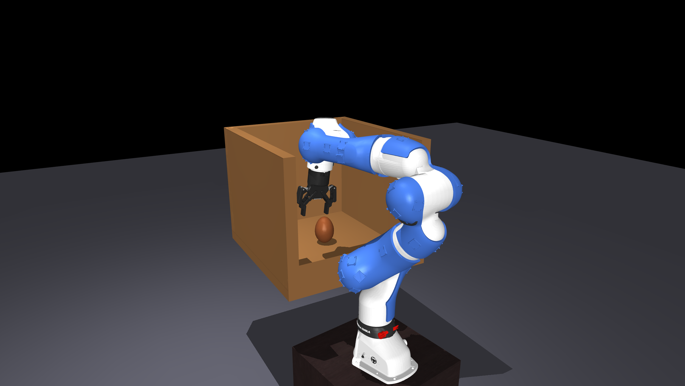
Without robot · Wrist view · All 40 sensor grids
link6_sensor_4: RGB / depth / 8×8
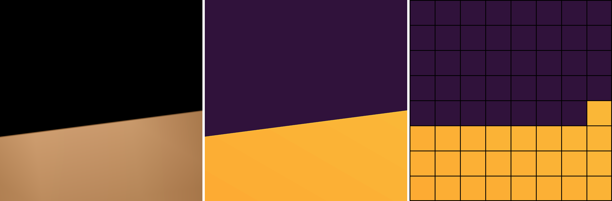
Nearby ray hits outside wrist FOV: cabinet: 25. See manifest for surface IDs and depth values.
link5_back_sensor_4: RGB / depth / 8×8
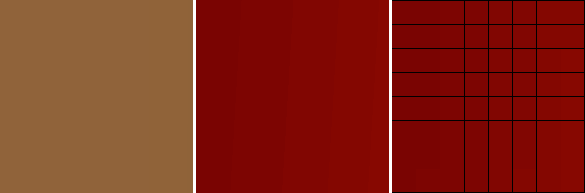
Nearby ray hits outside wrist FOV: cabinet: 64. See manifest for surface IDs and depth values.
link1_sensor_3: RGB / depth / 8×8
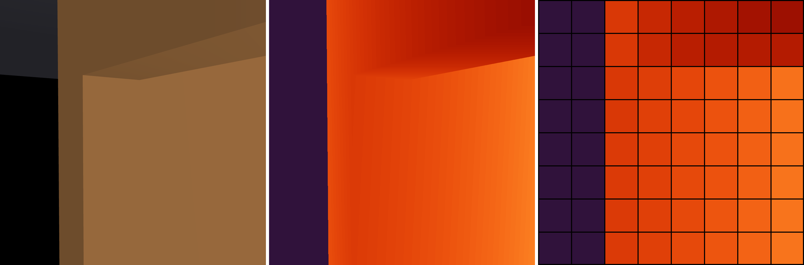
Nearby ray hits outside wrist FOV: cabinet: 48. See manifest for surface IDs and depth values.
Fumehood Clutter
Original v1011d recorded scene geometry; link 6 lowered 8 cm. Fresh simulation readings at this pose.
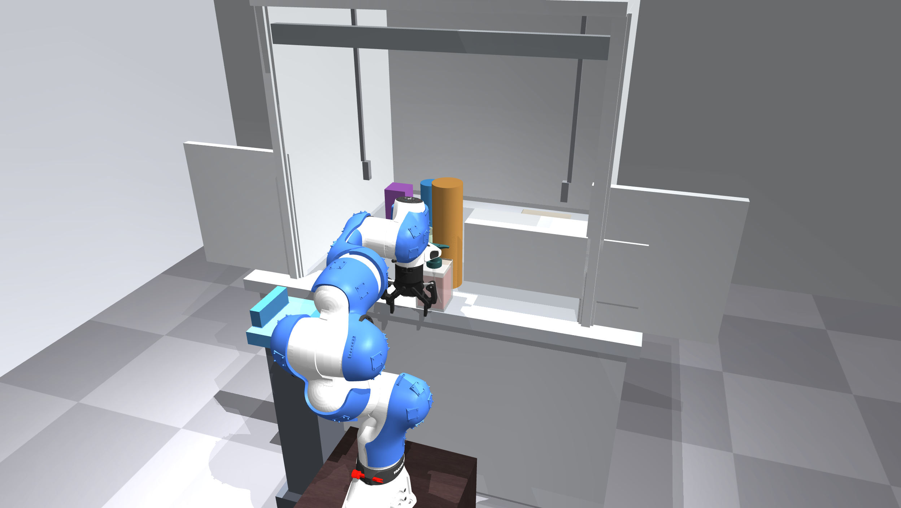
Without robot · Wrist view · All 40 sensor grids
link6_sensor_4: RGB / depth / 8×8
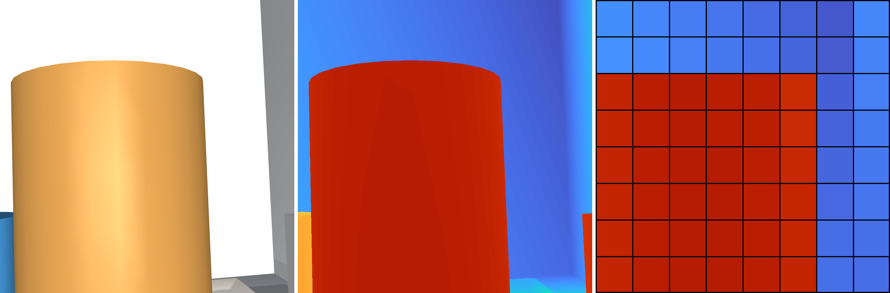
Nearby ray hits outside wrist FOV: pact_clutter_01/pact_primitive_cylinder_01: 36. See manifest for surface IDs and depth values.
link6_sensor_3: RGB / depth / 8×8

Nearby ray hits outside wrist FOV: hood_side_l: 17; pact_clutter_09/pact_primitive_box_09: 6; pact_clutter_08/pact_primitive_cylinder_08: 4. See manifest for surface IDs and depth values.
link5_back_sensor_4: RGB / depth / 8×8
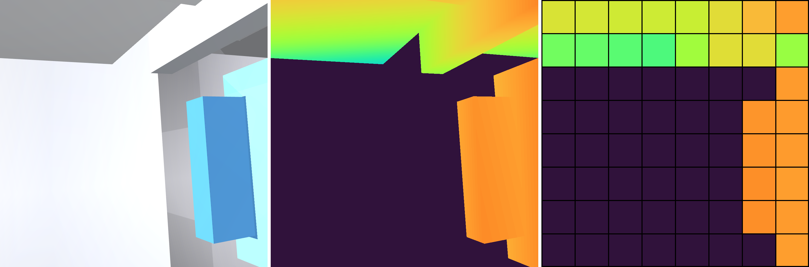
Nearby ray hits outside wrist FOV: jamb_l: 9; bench_top: 6; bench_body: 1; place_receptacle: 4; place_receptacle_lips: 6. See manifest for surface IDs and depth values.
Kitchen Items
Original recorded scene reconstructed with its existing kitchen overlay. Link 6 lowered 16 cm to expose bottles in sensor 3. All displayed readings recomputed; source recorded arrays saved separately.
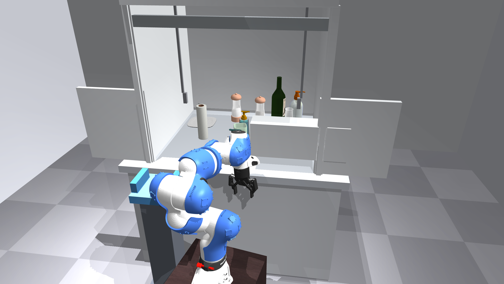
Without robot · Wrist view · All 40 sensor grids
link6_sensor_3: RGB / depth / 8×8
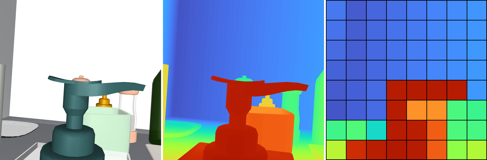
Nearby ray hits outside wrist FOV: pact_clutter_06/Soap_Bottle_11_soap_bottle_11: 11; cavity_obj_0/Cup_10_cup_10: 4; pact_preview_extra_Pepper_Shaker_2/Pepper_Shaker_2_SaltShaker.002: 2; pact_preview_extra_Wine_Bottle_1/Wine_Bottle_1_wine_bottle_1: 2; pact_clutter_04/Plate_22_plate_22: 2; bench_top: 2; pact_clutter_03/Plate_10_plate_10: 1. See manifest for surface IDs and depth values.
link5_back_sensor_4: RGB / depth / 8×8
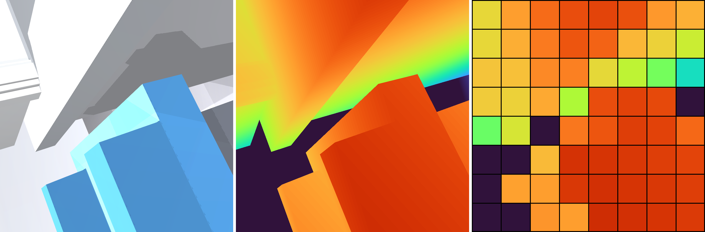
Nearby ray hits outside wrist FOV: bench_top: 16; bench_body: 9; hood_side_l: 2; jamb_l: 2; place_receptacle: 11; place_receptacle_lips: 15; place_pedestal: 1. See manifest for surface IDs and depth values.
link2_sensor_3: RGB / depth / 8×8
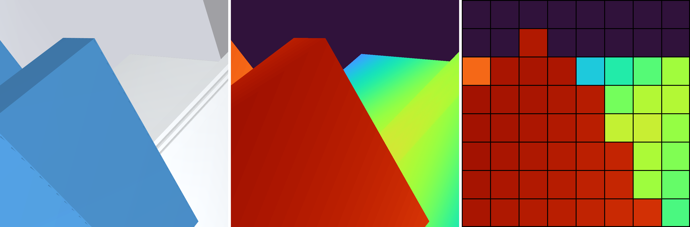
Nearby ray hits outside wrist FOV: place_receptacle_lips: 28; jamb_l: 4; hood_side_l: 9; place_receptacle: 6. See manifest for surface IDs and depth values.
{kind=link}
{kind=link}
{kind=link}
{kind=link}
{kind=link}
{kind=link}
{kind=link}
{kind=link}
{kind=link}
{kind=link}
{kind=link}
{kind=link}